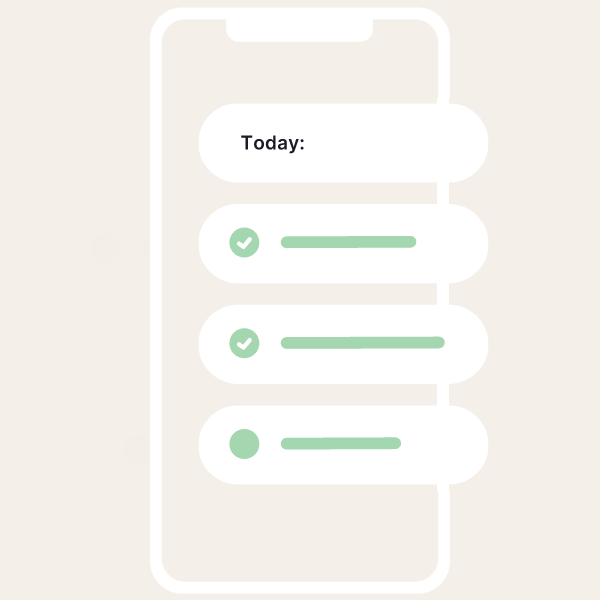

Built for peace of mind.
Empathy is designed to show you the specific steps to take, based on your unique situation and at
your own pace. Whether you’re planning a funeral, managing an estate, or dealing with any other
arrangements, get the knowledge and support you need.


Standing by to assist you.
Chat with an expert who understands what you’re going through. Our loss experts will provide you with
the answers you need, or help you find local professionals. They can even take some tasks off your
hands and do them for you.
Easily track and collect benefits.
Get simple and immediate guidance to all the benefits your family may be entitled to—including many
you may not have known about. The app helps you locate, determine eligibility, and collect on these
important sources of funding for the funeral and the estate.
Paperwork, figured out.
The app helps you locate and safely store important papers, and guides you through handling them.
Bills, debt, unused services, insurance policies, bank accounts, and more, to help you stay
organized and in control.
Listen in. Understand grief.
Grief is a fundamental human experience, and navigating it underlies every aspect of the Empathy app.
Original audio chapters walk you through the tangled processes of grieving to help you observe,
understand, and come to grips with what you're going through.